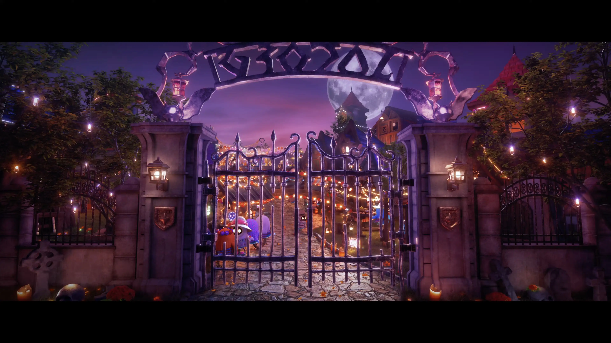
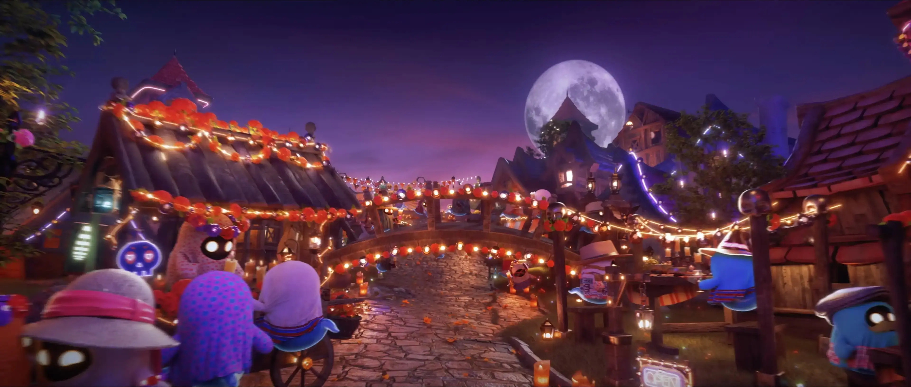
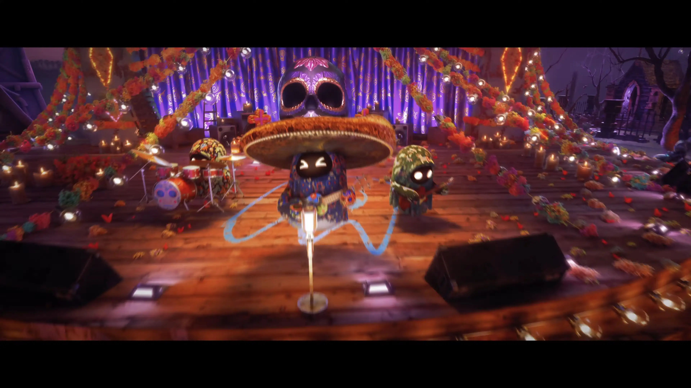
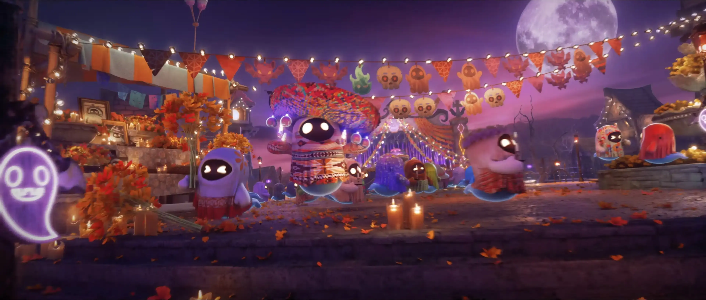
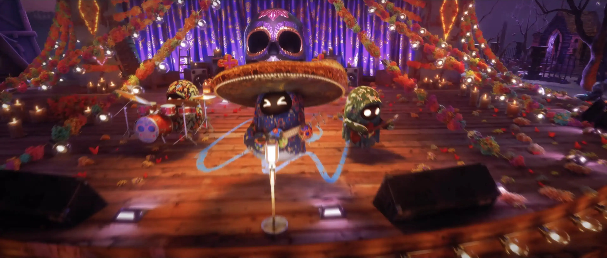
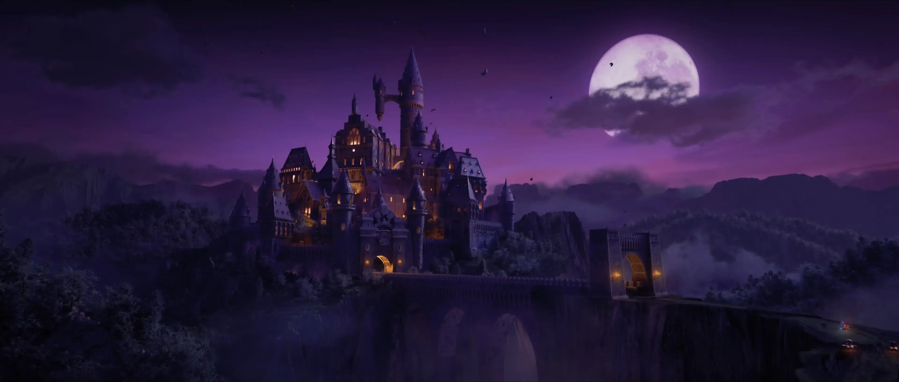

← Back to Home
Kart Rider Drift : 'Hallo Drift'
Client · NEXON
2023.06 - 2023.07
Contribution
- Camera Previz와 Moodmatic 제작을 통해 추격씬의 긴장감과 시네마틱 리듬 설계
- 장면 연출 방향에 맞춘 배경 디자인 및 외부 어셋 수정, Material 퀄리티업 작업
- 길을 따라 이어지는 One-take Camera Shot의 동선, 속도감, 시선 흐름 구성
- 다수의 Alembic Animation Asset으로 인해 무거워진 씬을 구간별로 분리하여 렌더링 최적화
- 초반 구간과 중후반 구간을 분리 렌더링한 뒤, 원테이크 흐름이 끊기지 않도록 합성 연결
- 최종 시네마틱 컷 출력을 위한 렌더링 세팅
*작업한 컷들 중 일부입니다. Selected shots from the project.





